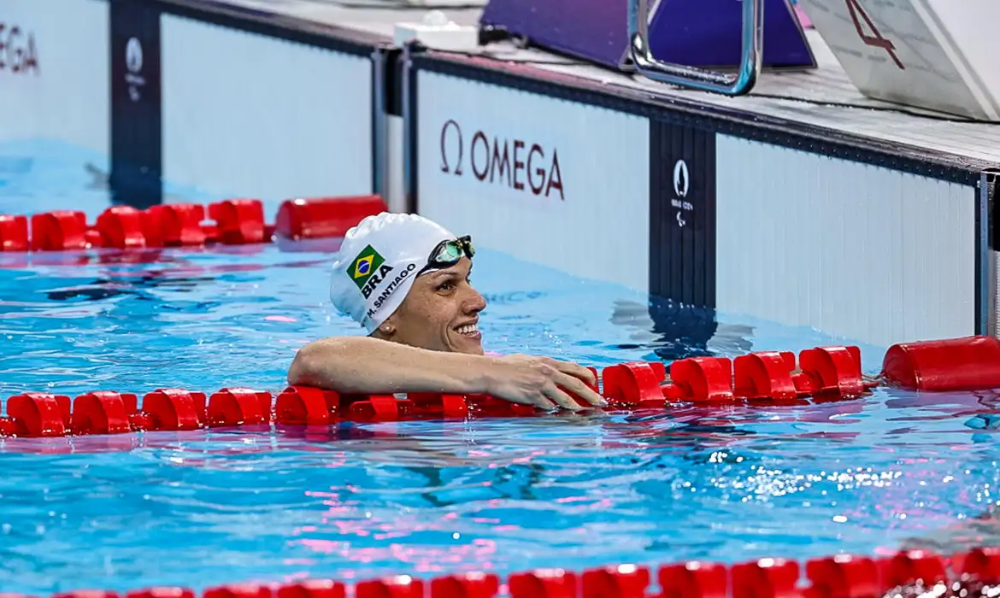

Destaques da semana
"Não esperem um jogo tranquilo"
Dorival quer seleção veloz e prevê dificuldades contra Equador
"Maturidade, planejamento e talento!"
Veja como o brasileiro Gabriel Bortoleto, de 19 anos, se destaca rumo a Fórmula 1
PARALIMPÍADAS
Brasil briga por medalhas no judô, natação e atletismo: veja agenda de sexta-feira
ATLETISMO
5h04 - 🥇 Final - Arremesso de peso feminino F12 - Izabela Campos
5h08 - Classificatórias 200m feminino T12 - Viviane Ferreira Soares/ Guia: Newton Vieira de Almeida, Lorraine Gomes de Aguiar/ Guia: Fernando Martins Ribeiro, Clara Daniele Barros da Silva/ Guia: Efraim Andrade,
6h08 - 🥇 Final - 1500m feminino T20 - Keyla Barros
6h20 - Classificatórias 400m masculino T47 - Lucas de Souza Lima, Petrúcio Ferreira dos Santos e Thomaz Ruan de Moraes
14h04 - 🥇 Final - Arremesso de peso masculino F57 - Thiago Paulino
14h31 - 🥇 Final - 400m masculino T62 - Alan Fonteles
14h48 - 🥇 Final - salto em distância feminino - Zileide Cassiano, Jardênia Felix e Debora Oliveira
15h09 - Classificatórias 200m masculino T37 - Ricardo Mendonça, Bartolomeu Chaves e Christian Gabriel
15h37 - Classificatórias 100m T36 - Aser Mateus Ramos

NATAÇÃO
4h30 - 400m Livre masculino S6 - Talisson Glock
4h49 - 50m Borboleta masculino S5 - Samuel Oliveira
4h57 - 50m Borboleta feminino S5 - Esthefany Rodrigues
5h34 -100m Costas masculino S14 - Arthur Xavier Ribeiro e Gabriel Bandeira
5h45 - 100m Costas feminino S14 - Ana Karolina Soares de Oliveira
5h54 - 50m Livre masculino S3 - Gabriel Araújo
6h11 - 50m Livre feminino S4 - Lidia Vieira da Cruz
6h24 - 100m Borboleta masculino S11 - Wendell Belarmino
6h28 - 100m Livre masculino S8 - Gabriel Cristiano
🥇 Finais – 12h30 às 16h30
12h30 - 🥇 Final 400m Livre masculino S6
12h41 - 🥇 Final 400m Livre feminino S6 - Laila Suzigan Abate
12h52 - 🥇 Final 50m Borboleta masculino S5
12h58 - 🥇Final 50m Borboleta feminino S5
14h04 - 🥇Final 100m Costas masculino S14
14h10 - 🥇Final 100m Costas feminino S14
14h33 - 🥇Final 50m Livre masculino S3
15h03 - 🥇Final 50m Livre feminino S4
15h10 - 🥇Final 100m Borboleta masculino S11
15h33 - 🥇Final 100m Livre masculino S8
